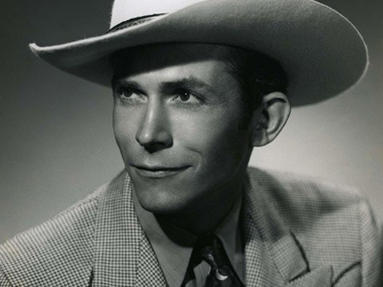
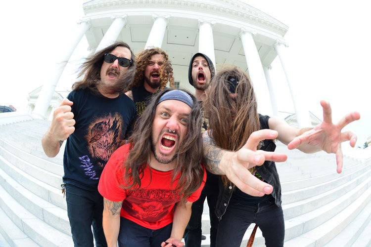

Thomas Alan Waits (born December 7, 1949) is an American singer-songwriter, composer, and actor. Waits has a distinctive voice, described by critic Daniel Durchholz as sounding like "it was soaked in a vat of bourbon, left hanging in the smokehouse for a few months, and then taken outside and run over with a car."[1] With this trademark growl, his incorporation of pre-rock music styles such as blues, jazz, and vaudeville, and experimental tendencies verging on industrial music,[2] Waits has built up a distinctive musical persona. He has worked as a composer for movies and musicals and has acted in supporting roles in films, including Paradise Alley and Bram Stoker's Dracula. He also starred in Jim Jarmusch's 1986 film Down by Law. He was nominated for an Academy Award for his soundtrack work on One from the Heart. Waits' lyrics frequently present atmospheric portraits of grotesque, often seedy characters and places—although he has also shown a penchant for more conventional ballads. He has a cult following and has influenced subsequent songwriters despite having little radio or music video support. His songs are best-known through cover versions by more commercial artists: "Jersey Girl", performed by Bruce Springsteen, "Ol' '55", by the Eagles, and "Downtown Train", by Rod Stewart. Although Waits' albums have met with mixed commercial success in his native United States, they have occasionally achieved gold album sales status in other countries. He has been nominated for a number of major music awards and has won Grammy Awards for two albums, Bone Machine and Mule Variations. In 2011, Waits was inducted into the Rock and Roll Hall of Fame.[3][4] He is also included among the 2010 list of Rolling Stone's 100 Greatest Singers,[5] as well as the 2015 list of Rolling Stone's 100 Greatest Songwriters of All Time. Waits lives in Sonoma County, California, with his wife and musical collaborator Kathleen Brennan, and three children.

Hiram King "Hank" Williams, (/hæŋk wɪljəmz /; September 17, 1923 – January 1, 1953) was an American singer-songwriter and musician. Regarded as one of the most significant and influential American singers and songwriters of the 20th century,[2][3] Williams recorded 35 singles (five released posthumously) that reached the Top 10 of the Billboard Country & Western Best Sellers chart, including 11 that ranked number one (three posthumously). Born in Mount Olive, Butler County, Alabama, Williams moved to Georgiana, where he met Rufus Payne, a black street performer who gave him guitar lessons in exchange for meals or money. Payne had a major influence on Williams' later musical style, along with Roy Acuff and Ernest Tubb. During this time, Williams informally changed his name to Hank, believing it to be a better name for country music.[citation needed] He moved to Montgomery, where he began his music career in 1937, when producers at radio station WSFA hired him to perform and host a 15-minute program. He formed as backup the Drifting Cowboys band, which was managed by his mother, and dropped out of school to devote his time to his career. When several of his band members were conscripted into military service during World War II, Williams had trouble with their replacements, and WSFA terminated his contract because of his alcohol abuse. Williams eventually married Audrey Sheppard, who was his manager for nearly a decade. After recording "Never Again" and "Honky Tonkin'" with Sterling Records, he signed a contract with MGM Records. In 1948 he released "Move It on Over", which became a hit, and also joined the Louisiana Hayride radio program. One year later, he released a cover of "Lovesick Blues", which carried him into the mainstream of music. After an initial rejection, Williams joined the Grand Ole Opry. He was unable to read or notate music to any significant degree. Among the hits he wrote were "Your Cheatin' Heart", "Hey, Good Lookin'", and "I'm So Lonesome I Could Cry". Several years of back pain, alcoholism, and prescription drug abuse severely damaged Williams' health. He divorced Sheppard and was dismissed by the Grand Ole Opry because of his unreliability and alcohol abuse. Williams died in 1953 at the age of 29, from heart failure exacerbated by pills and alcohol. Despite his short life, Williams has had a major influence on 20th-century popular music, especially country music. The songs he wrote and recorded have been covered by numerous artists and have been hits in various genres. He has been inducted into multiple music halls of fame, such as the Country Music Hall of Fame (1961), the Songwriters Hall of Fame (1970), and the Rock and Roll Hall of Fame (1987).

Iron Reagan was formed in 2012 by members of Municipal Waste, Darkest Hour, Cannabis Corpse, and Hellbear. They have primarily played crossover thrash and hardcore punk. They are currently signed to Relapse Records. The name of the band is a pun on the heavy metal band Iron Maiden and the 40th president of the United States Ronald Reagan.